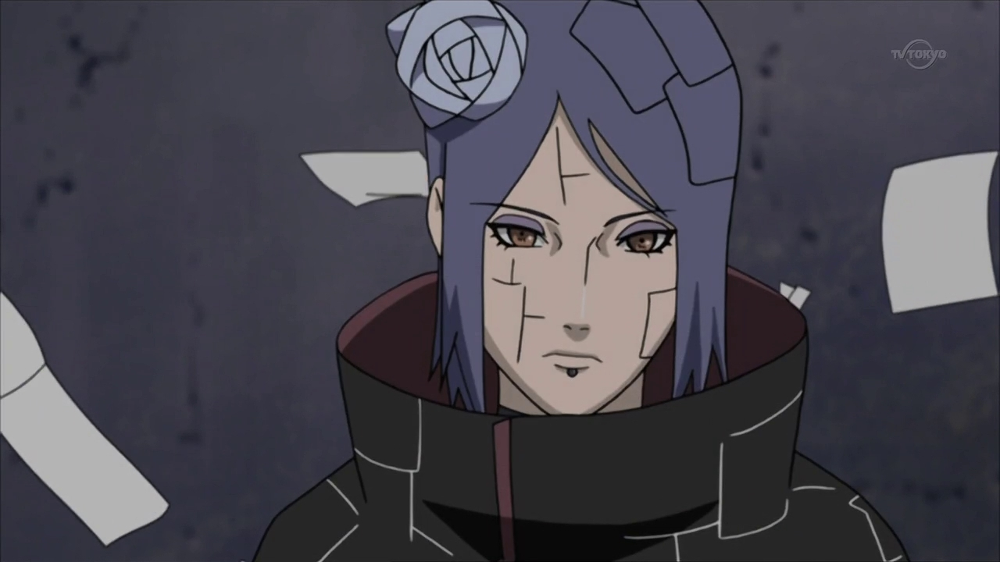
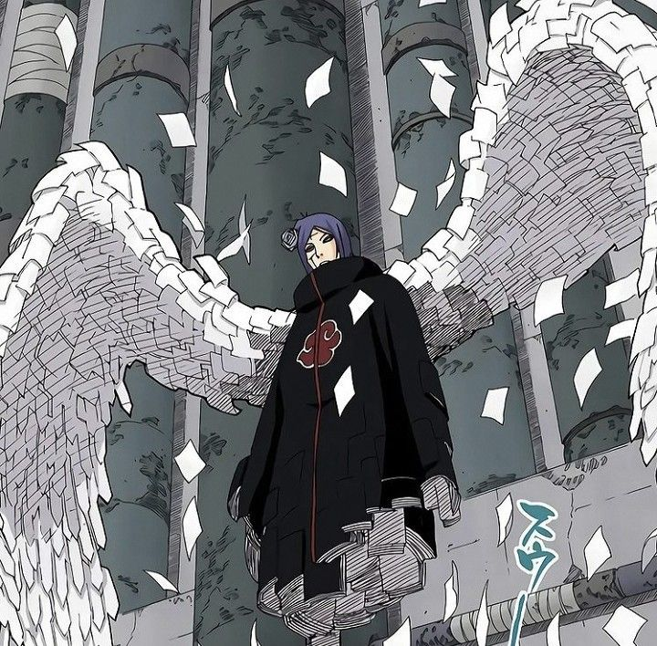

Inicio:
Konan (小南, Konan) fue la única mujer en Akatsuki y una de sus miembros más leales. Llevaba el anillo "Blanco" (白, Byaku) en el dedo medio derecho. Era la compañera más cercana de Nagato (Pain) y Yahiko, y desempeñó un papel crucial en la fundación y liderazgo de Akatsuki. Tras la muerte de Nagato, Konan se alejó de la organización y dedicó su vida a proteger el legado de sus amigos.
Historia:
Konan nació en Amegakure y creció en medio de la guerra. Junto a Nagato y Yahiko, fundó Akatsuki como una organización para la paz. Tras la muerte de Yahiko, Konan se convirtió en la mano derecha de Pain, ayudándolo a liderar Akatsuki. Después de la muerte de Nagato, Konan se alejó de Akatsuki y protegió a Naruto, a quien veía como la esperanza para la paz. Murió luchando contra Tobi (Obito) para proteger el Rinnegan de Nagato.

Habilidades:
Las habilidades de Konan se centraban en su capacidad para manipular el papel. Podía transformar su cuerpo en hojas de papel, lo que le permitía volar, esquivar ataques y crear armas o trampas. Su técnica más poderosa, el "Dios del Ángel" (神の紙者, Kami no Shisha), envolvía a sus enemigos en un mar de explosivos de papel, causando una destrucción masiva.
